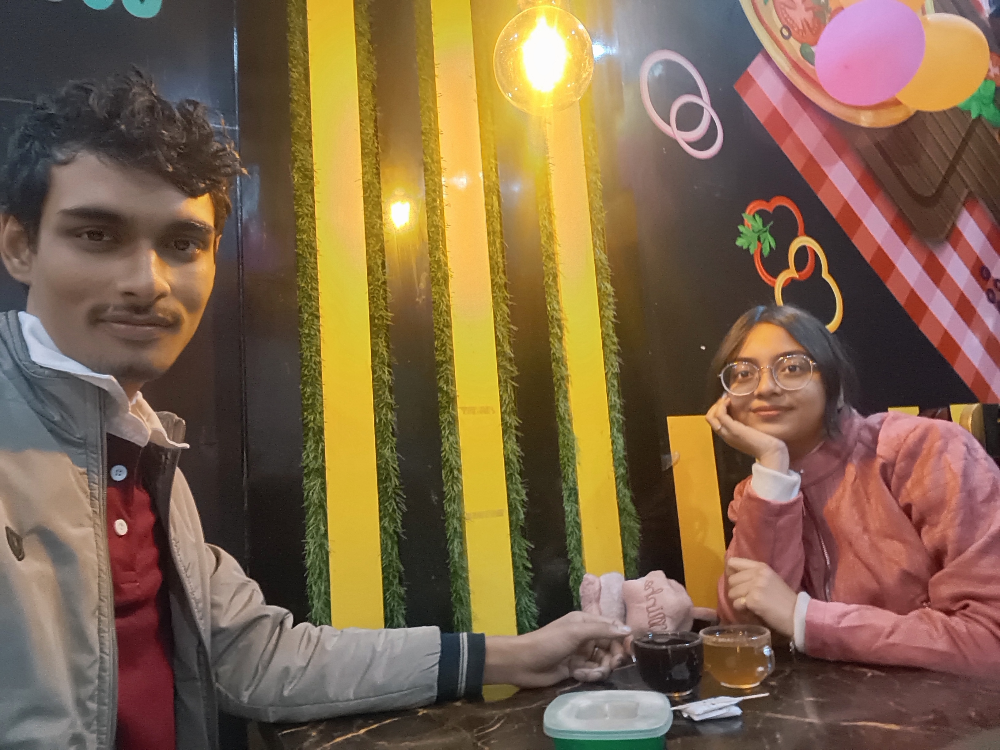

Welcome to
OUR
2025
WRAPPED
Tap right to start...
We spent
365
Days Loving Each Other
(And I loved every single second of it)
This year
213
"ILY"s were exchanged!
Every single of them made my day, my love.
Top Theme of 2025:
DEEP
CONNECTION
From figuring out life, getting into our colleges,
to choosing each other every single day.
The best part wasn’t the chaos — it was us.
My Favorite Feature
YOU
Your smile was the #1 tracked event in my heart this year.
This year, in one frame

Growth, chaos, dreams — and always finding our way back to each other.
What I’m Most Proud Of
You chasing your dreams.
Us getting into our colleges.
And somehow still building things together — even when life got heavy.
You inspire me more than you know.
2025 Wins (Powered by You)
Sex & Romance crossed 2.1k readers.
YouTube hit 2.5k subs.
But the real win? Doing it while feeling supported, understood, and never alone.
One last thing...
"Dearest wifey,
2025 was amazing because you were by my side.
I thank God every day for bringing you into my life, and even more for you choosing to stay, to grow, to believe, and to stand beside me when things were uncertain.
Aro onek bochor dhore amra ek sathe thakbo. Prottek bochor, prottek din, prottek moment e — ami aro beshi bhalobashi tomake.
I can't help falling in love with you again and again, every single day.
Thank you for choosing me — even when I was building, breaking, dreaming, and rebuilding again.
2026 will be even better. Dekhenio ;) and amader sob bhalo hobe.
I love youuuuuuuuuuuuuu infinityyyyyyy."
(Tap to replay)
Tap Left to go back ← → Tap Right to continue